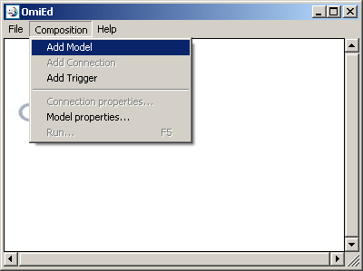
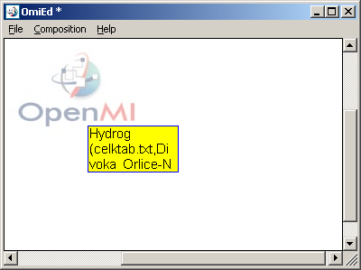
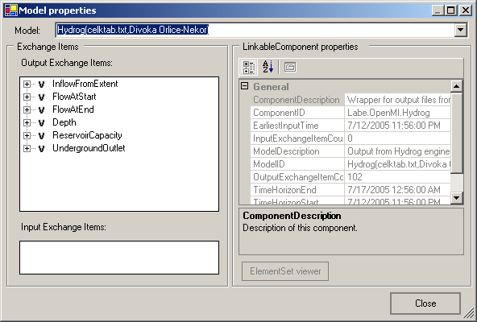
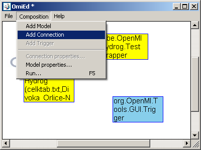
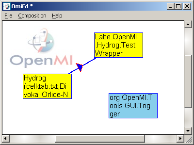
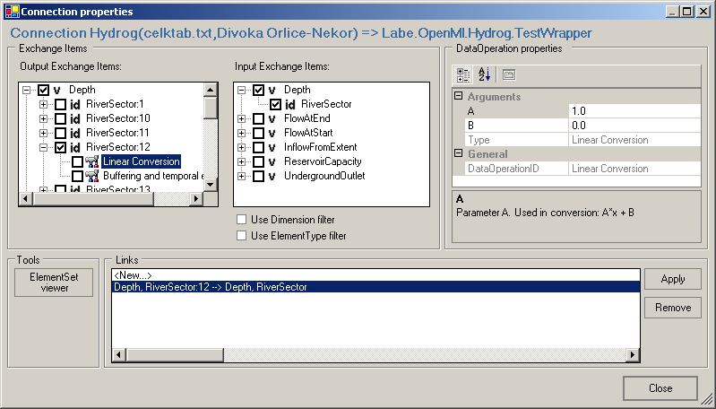
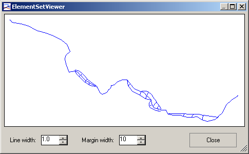
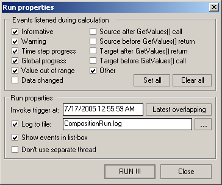
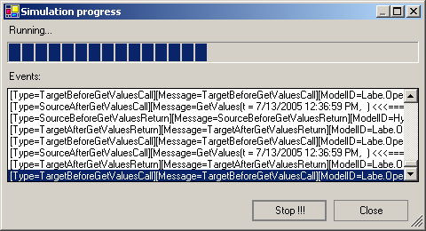
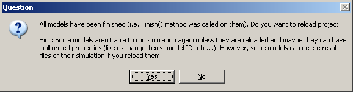

OpenMI standard provides capability for linking of different computational models mostly used for water and environment modeling. After this standard was introduced, the need of user friendly application able to link OpenMI compliant models arised. Oatc.OpenMI.ConfigurationEditor.exe is such an application
If you are new to OpenMI, please take a look at Links section of this document to find sources of information about OpenMI.
As the first step you have to add models into your composition. In menu click
on Composition > Add Model, in open-file dialog choose
OMI file of the model and click OK. Rectangle describing your model
should now appear in composition area. Same operation can be performed in popup
menu, which you can open by clicking of right mouse button.

Repeat this procedure for each model which you want to have in your
composition. There's only one limitation: two models cannot have same ModelID.
If you want to show properties of the model, click on Composition > Model properties...
and select requested model. Same operation can also be performed in popup menu
by right-clicking of model rectangle and selecting Model properties....

See section Linking of models for more detail about the
exchange items tree.
You should also add Trigger as well, if you want to run simulation of the composition. In menu click Composition > Add Trigger. Trigger is special model used to fire simulation, see section Running simulation for more detail.
If you want to make first link between two different models in some direction,
you must create connection between them first. Connection is an abstraction
that collects links between two models, all its links have same direction as
connection itself. In menu click Composition > Add Connection
or in popup menu click Add Connection, click on the source model's
rectangle and afterwards click on target model's rectangle. Source model is
model providing data, target model is model accepting data. Line connecting two
models with small triangle in the middle should now appear in the composition
area.

Now you can add links to connection. Click on small triangle on the connection
to show Connection properties dialog. Here you can see two trees
describing exchange items of two connected models, Output exchange items
are from source model, Input exchange items from target model.
First-level nodes of this trees correspond to quantities, second-level nodes to
element sets. In case of Output exchange items there are third-level
nodes which show all available Data operations for output exchange item.
If you click on quantity, element set or data operation, it's properties
appears on the grid right. These properties are all read-only, only data
operations can have writeable arguments.
OpenMI link generally consists of one output quantity, output element set,
input quantity and input element set. In the bottom of the window you can see
list of such links in this connection and one item named <New...>.
If you want to add new link, click on this item, check output quantity, element
set and maybe some data operations, check input quantity and element set and
aftewards click Apply button. New link now appears in the list. If you
want to edit existing link, click on it in the list, change it's properties and
click Apply. To remove existing link, click Remove button.

If you use Use Dimension filter option, there will be shown only input
exchange items with same dimension as the quantity checked in output exchange
items. Similar behaviour has Use ElementType filter, the only difference
is that there are shown input exchange items which have either ID-based element
set or element set of same type (i.e. line, polygon, poly-line, ...) and with
same number of elements like checked output element set.
ElementSet viewer is simple tool used to show spatial properties of one
or two ElementSets. Check output and/or input ElementSet and click
corresponding button.

Before you can run simulation, make sure the Trigger is part of your
composition and is linked to one model. Trigger is special model used to fire
simulation, it just once invokes GetValues() on linked model at
specified time.
In menu click Composition > Run... to show Run properties
dialog.

Here you can set what types of event do you want to listen during computation,
these events can be stored into log file (check Log to file and type or
browse filename of log-file) and/or shown in list-box (check Show events in
listbox). Remember that handling of events can cause large performance
overheads for models performing fast timesteps, especially showing events in
list-box is relatively slow.
Invoke trigger at defines the time, when trigger invokes GetValues()
on linked model. It can be automatically set to latest overlapping time of all
models by clicking Lastest overlapping button. See Remarks
section about what format of date and time to use.
Don't use separate thread check-box determines whether simulation is run
in same thread as user interface (UI). If simulation runs in separate thread,
UI responds immediately and user can even stop it. However, some components
wrapping for example model using COM single-thread apartments can run in
problems, because model (in this case COM object) is intialized in UI
thread and not in simulation thread. If simulation runs in same thread as user
interface, and timestep of some model takes long time to execute, UI can stop
responding and user isn't able to stop simulation as well. See
Command-line options to see how you can change default
thread apartment state.
To start the simulation, click RUN !!!.

After simulation finished, message-box asking you whether you want to reload
the project appears. OpenMI standard doesn't include functionallity to
reinitialize models after simulation finished, and model may not be able to run
simulation again and/or have malformed properties (like exchange items, model
ID, etc...) Reloading is just workaround to this behaviour, it's same operation
like if you save the project, restart Configuration Editor and open your project again.
However, some models can delete result files of their simulation if you reload
them.

If you decide not to reload the composition, you can do it later in menu File > Reload.
Whole application uses english/US culture for converting (string to DateTime, DateTime to string, string to int, etc...). For example Trigger invoke at in Run properties dialog uses MM/dd/yyyy hh:mm:ss AM|PM format.
In menu Options > Register file extensions you can register OPR and OMI file extension to be opened with this Configuration Editor application, e.g. from Explorer. In such case or if you open OPR file, Configuration Editor application starts and opens this file, if you open OMI file, Configuration Editor creates a new composition with just one model from this file. This registartion can also be performed from command-line, see Command-line options how.
Behaviour of Configuration Editor can be influenced by set of command-line arguments.
Syntax: Oatc.OpenMI.ConfigurationEditor.exe [-opr OPRFILE | -omi OMIFILE | -reg | -unreg | -help] [-mta]
| -opr OPRFILE | Opens Configuration Editor project from specific OPRFILE. |
| -omi OMIFILE | Creates a new composition and adds model from OMIFILE into it. |
| -reg | Registers OPR and OMI file extensions in Windows registry to be opened with this Configuration Editor executable. |
| -unreg | Discards all OPR and OMI file extension registrations from Windows registry. |
| -help | Shows window with description of command-line options. |
| -mta | Application creates and enters a multi-threaded apartment COM model at startup. |
This utility is used to run OpenMI compositions from the
command-line. If the user installed the Configuration Editor using the msi installer, then this utility can be found in the same place under "Program Files".
Otherwise, it can be downloaded and built from sourceforge.
Syntax: Oatc.OpenMI.ComandLine.exe -r OPR_FILE [-v] [-mta]
| -r OPR_FILE | Runs simulation of specified Configuration Editor project. |
| -v | Verbose mode off. |
| -mta | Application creates and enters a multi-threaded apartment COM model at startup. |
| -help | Shows help. |
Copyright (c) 2005,2006,2007, OpenMI Association
All rights reserved.
Redistribution and use in source and binary forms, with or without modification,
are permitted provided that the following conditions are met: